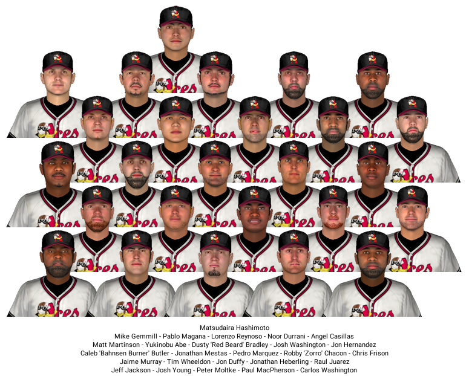

ABC Eastern Division
New York Aces
53–68 · 8 games back · Aces Field
Recent results
Upcoming schedule
New York Aces beat
The latest final on August 19 was New York 3, St. Louis 4.
This beat has results, upcoming games and franchise records. Its article archive is open for future coverage.
Franchise history
League almanac| Season | Franchise | W–L | Finish |
|---|---|---|---|
| 1980 | New York Aces | 81–81 | Regular season |
| 1979 | New York Aces | 82–80 | Regular season |
| 1978 | New York Aces | 93–69 | Tournament |
| 1977 | New York Aces | 98–64 | Tournament |
| 1976 | New York Aces | 90–72 | Champion |
| 1975 | New York Aces | 89–73 | Tournament |
| 1974 | New York Aces | 85–77 | Regular season |
| 1973 | New York Aces | 104–58 | Tournament |
| 1972 | New York Aces | 90–72 | Tournament |
Team portrait
